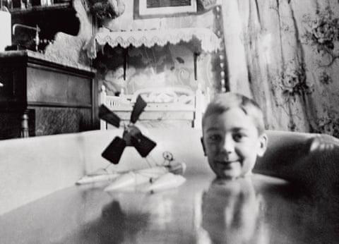
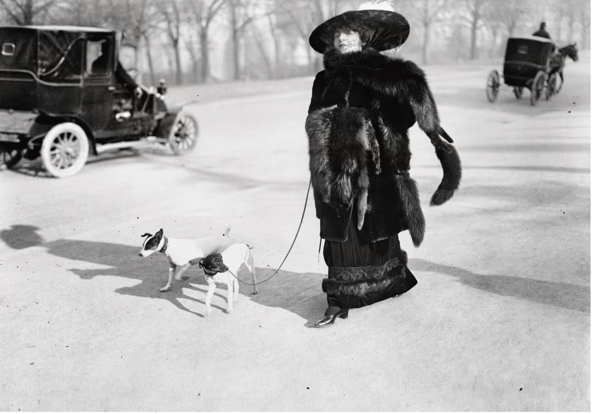
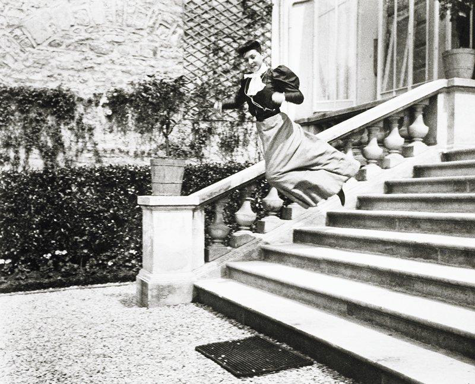
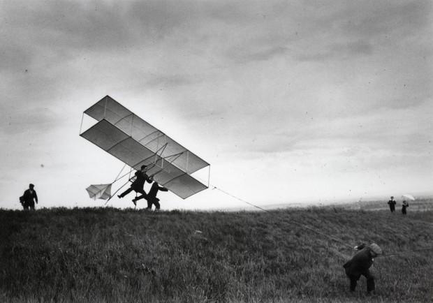
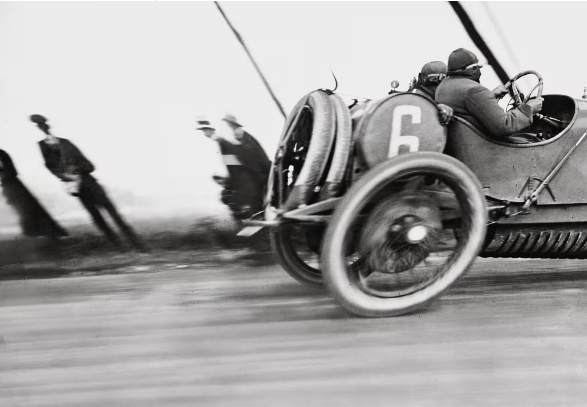
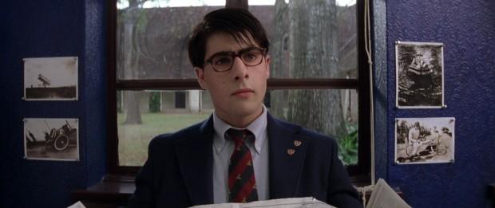

Introduction
Vernacular photography is taken by ordinary individuals, typically for personal or practical reasons, rather than artistic or professional purposes. Examples of vernacular photography are snapshots and family photo albums. Ordinary people often take these photographs, hoping to capture memories of family or activities. Photography with a vernacular purpose serves as a memory aid for individuals and families to capture both important moments and routine activities in a permanent form.
Vernacular photography began with the growing popularity of compact cameras, introduced by Kodak in the late 1880s. Vernacular photography is an interesting genre to examine because of its retrospective view as a representation of a specific time and/or person’s everyday life. With the increasing popularity and accessibility of compact cameras, vernacular perspectives from middle-class individuals have become more prevalent. Still, extraordinary exceptions to these average perspectives are essential to understanding history.
Jacques-Henri Lartigue was born in 1894 in France to Henri and Marie Lartigue. His father, Henri Lartigue, was a wealthy banker. At the age of seven, in 1901, his father gave Lartigue his first camera, a large plate with a tripod. This camera was so large and elaborate that he needed to stand on a stool to operate it. Lartigue’s perspective on vernacularity is interesting due to his affluence and age. At a time when photographs were stiff, stale, and lacked emotion, Lartigue’s photography offered an element that was curious and innovative, representing a fresh and creative view of the world. Jacques-Henri Lartigue wrote in his diary: “I will be able to photograph everything—everything! And I know very well that many things will ask me to take their pictures, and I will take them.”
During Lartigue’s childhood, France was at the peak of economic prosperity and comfort. Lartigue’s father was a self-made businessman and a wealthy banker who wanted to provide his family with leisure and comfort. Lartigue secretly thought his father was God in disguise and often prayed to Jesus that he would never grow up. This economic prosperity led to numerous technological advancements, including the automobile and the airplane, which piqued Lartigue’s interest and became subjects of his photographs.
Lartigue’s photography was uninfluenced by the aesthetic trends of the time, making his perspective unique and original, despite the relatively mundane subjects he captured. His photographs portray the age through family, friends, and a childlike interest. Lartigue illustrates a sense of comedy, human absurdities, life, and play.
Later in life, Lartigue dissociated from his interest in photography and pursued an education in painting. He married and remained a successful but unremarkable artist until his photographs were discovered. It wasn’t until 1963, at the age of 69, that his photographs were “discovered” by Charles Rado of the Rapho agency, who introduced Lartigue to John Szarkowski, a curator at the Museum of Modern Art in New York City. Szarkowski then arranged an exhibition of Lartigue’s work at the museum.
Because of its capsule-like quality and its unique perspective on economic class and age, Lartigue’s work immediately gained interest after its debut, landing his photographs in Life Magazine in late 1963. He published his first photobook in 1967, Diary of a Century. Like most other vernacular photographers, Lartigue considered his photographs memory aids, never intended for public consumption. The beauty of his work lies in that quality: that they are so genuinely curious and unbothered by trends or influences of the time.
American photographer Richard Avedon said, “The most deceptively simple and penetrating photographer in the history of the art, a gifted observer who has shown us leisure as an adventure and as an indulgence and made us know the full impact of what is lost.” Lartigue’s photographs in Diary of a Century are a fascinating examination of the scope of vernacularity due to their three main qualities: his childlike genuineness, his economic standing and social class, and his interest in the technological advancements of the era.
Child-like Qualities
Lartigue in the bath with his hydroglider model (shutter release by his mother, Marie Lartigue), 1904 (Figure One) illustrates Lartigue’s innocence and curiosity. The blurry black and white photo shows Lartigue (aged ten) sitting in a bathtub in the center right, the water level reaching the bottom of his chin. He smiles spontaneously with his hydroglider toy floating next to him in the center-left of the photo. The background shows the interior of the bathroom. Frilly curtains line the wall on the right side of the image, and the corner of the sink is in view in the top left. The photograph is taken at the water’s surface, most likely putting us in the perspective of Lartigue’s mother.

L. Nelson, author of “The Ancient Little Boy” (1981), claims that Lartigue “represents photography at its purest, most private, and least self-conscious: They are the product of a brand new medium in the hands of a wide-eyed babe.” The qualities of childhood are curiosity, creativity, and optimism. Lartigue acted as a sponge, absorbing the world around him and capturing it on film.
Lartigue wrote in 1921: “Happiness is a hard thing to explain. My happiness, especially since it still so often resembles what makes a baby smile suddenly in its carriage, without the adults understanding why. The little joys, the large joys—I notice them, I look hard at them, I try to understand them all, always, without stopping.”
Children are the most curious age group because of their unfamiliarity with the world around them. Lartigue had the opportunity to capture his curiosity through photography.
Affluence and Influence
Jacques-Henri Lartigue’s father was an affluent and influential banker in France, which granted his family status within the upper echelons of the French bourgeoisie. The French haute bourgeoisie, or upper-class bourgeoisie, comprised wealthy individuals who gained power and influence through trade, industry, and commerce, rather than noble birth. It included industrialists, lawyers, bankers, and politicians. The Lartigue family’s wealth and status afforded Jacques-Henri Lartigue opportunities that members of lower economic classes did not have access to, such as entry into automobile races, social parades, and the ability to own a camera, which were previously only accessible to the wealthy.
The French high society of the Belle Époque (Beautiful Era) was full of allure and exclusivity. Lartigue was one of the few photographers who captured candid moments of everyday life during this period.
In 1911, Lartigue captured his image Avenue du Bois de Boulogne, Paris, January 15, 1911 (Figure Two). The photo captures the moment a woman strolls by with her two dogs on leash, walking in front of her. The woman maintains fierce eye contact with the camera, her expressionless face concealed behind a black lace veil connected to a gigantic, feather-plumed hat. Her long fur coat covers nearly all her body, exposing only her face through the veil. Her black dress peeks below the knee, and her black kitten heel peeks from under her dress. Her two dogs walk in front and to the side of her, one of them looking sheepishly up at her.
The image’s background is the Avenue du Bois de Boulogne, the street that lines the Bois de Boulogne park in Paris. A horse-drawn carriage whips by on the right, and another carriage comes into frame from the left. The blurry trees of the Bois de Boulogne park can be seen in the background.

When this image was taken, Lartigue was 17 years old, shortly before he would give up his photographic practice. Lartigue was interested in capturing the social parade in the Bois de Boulogne. Between 4 pm and 6 pm, motorcars and open horse-drawn carriages would circle the tree-lined drives, stopping at the Pavillon d’Armenonville.
The Bois de Boulogne is renowned for its vibrant atmosphere and numerous social gatherings. The park hosted events such as the Fête à Neuneu, a funfair that attracted families, and solidarity races like Courir pour Toit, which offered opportunities for social interaction and engagement. Additionally, the park’s green spaces, such as the Parc de Bagatelle and Jardin des Serres d’Auteuil, invite leisurely walks, picnics, and casual social time for visitors.
Lartigue was obsessed with the outlandish and maximalist looks of the women parading around the park. In his book, Lartigue wrote, “I suppose I go to the park to photograph the ladies in their most outrageous and beautiful hats.” And then: “She, the lady who is very decked out, very fashionable, very ridiculous… or very pretty… from afar she stands out among the strollers like a golden pheasant in a hen coop.”
He then described his practice of taking photos of the outlandish women: “She approaches… I’m shy, trembling a little… 20 metres, ten metres, eight, six… Clack! My camera shutter makes so much noise that the lady almost jumps as much as I do.”
Cultural Case Study of Technological Advancements
The first automobile was developed in 1886 by Carl Benz, and the first airplane in 1903 by Wilbur and Orville Wright. Even photography itself was a technological wonder of the age. In the era of technological advancements, the public was captivated by motion and speed, as exemplified by Lartigue. From a young age, Jacques-Henri Lartigue was obsessed with this new idea of motion, prompted by his father’s gift-giving of technology. His older brother Zissou shared his fascination.
In 1905, at 11 years old, he captured an image of his cousin leaping high up a staircase (My Cousin, Bichonnade, Paris, 1905, gelatin silver print) (Figure Three). The photo was taken from the bottom of the staircase, making her leap appear all the more monumental. Her long dress billows as she smiles directly into the camera.

In 1904, only one year after the Wright brothers managed to conquer flying, Lartigue and his older brother Zissou went to Marimount to witness Gabriel Voisin manage to fly for 25 meters. My Brother, Zissou, Gets His Glider Airborne, Château de Rouzat, 1910 (silver gelatin photograph, Figure Four) captures the moment that Zissou tugged the plane airborne, hoisting presumably Gabriel Voisin into the air. Zissou, keen on the technical aspects of aviation, built flying machines with his family and household staff, who were delighted to participate in his adventure. Jacques chose photography, or maybe photography chose him, to capture these magical moments.

In 1912, at 18, Jacques-Henri Lartigue covered one of the most serious tests of automotive speed: the Gordon Bennett Cup in Metz, France. Grand Prix of the ACF, Dieppe, a gelatin silver print by Jacques-Henri Lartigue (Figure Five), shows Lartigue’s perspective during the race. We can see the figure of a car racing by, with only the rear half in view. Lartigue barely managed to catch the car on camera, sitting parallel with it, swinging his camera to see it going by.
The backs of the driver and passenger are the only things in clear focus; the driver grips the steering wheel with his hands. Everything else is blurred with motion, signifying the power and speed of the race car. The vehicle’s back wheels and bystanders watching from the other side of the track are distorted by the vehicle’s speed. The Grand Prix was held in 1912 on the Dieppe circuit, and while No. 6, a Schneider driven by M. Croquet, was a favorite, the Peugeot, with ace driver Georges Boillot at the wheel, won.

Significance
Lartigue gave up photography to study painting at the Académie Julian in Paris from 1915 to 1916. Lartigue told Life Magazine, “Truthfully, I am neither a painter nor a writer nor a photographer. I am simply an ancient little boy, running after the ghost of his game of terrestrial paradise.” Until his photographs were discovered in 1963, he considered himself a painter rather than a photographer. Putting away his pictures gave them a capsule-like quality; naming his first photobook “Diary of a Century,” his photos acted like a diary of an age of technological curiosity.
Between 1963 and 1970, Lartigue’s popularity grew slowly but steadily. In 1963, Lartigue was introduced to photography through his exhibit at the Museum of Modern Art in New York City. The exhibit was curated by John Szarkowski, who is regarded as having helped establish Lartigue as a significant artist. That same year, Lartigue was featured in a Life Magazine column entitled “The World Leaps Into an Age of Innovation.”
In 1967, Lartigue took his first fashion photograph for Harper’s Bazaar in a column entitled “Lartigue: His Camera Spans a Century.” A double-page spread featured Mary Lancray on the left in 1912 in the Bois de Boulogne (Lartigue’s image), and model Isa Stoppi on the right, in 1966 in Central Park. Seven years later, Richard Avedon raised Lartigue to the ranks of the great twentieth-century photographers with Diary of a Century. Szarkowski had shown Avedon Lartigue’s photos and wrote that he would never forget them: “It was one of the most moving and powerful experiences of my life. They are photographs that echo—I will never forget them. Seeing them was for me like reading Proust for the first time.”
Hiro, an influential Japanese-American photographer obsessed with Lartigue’s debut photo album Diary of a Century, said, “He still has that marvelous childlike quality about him.”
Lartigue’s unserious curiosity about motion and life has ingrained his importance in the photographic medium forever. His groundbreaking ability to capture the fluidity of motion and the vibrancy of everyday life has solidified his role as a pioneering force in fine art, photojournalism, and all forms of documentation of everyday life. Notorious filmmaker Wes Anderson has cited Lartigue as a significant inspiration for his works. In preparation for the film Rushmore (1998), Anderson said in the press kit: “We looked at some pictures by photographer Jacques-Henri Lartigue, who reminds me of Max, and that became a part of it.” At least four of Lartigue’s photos even appear in the film.

At the opening of The Life Aquatic with Steve Zissou (2005) in France, Anderson said (in a translated transcript): “A wonderful French photographer, Jacques-Henri Lartigue, who took many incredible photos at the beginning of the 20th century, had a brother named Zissou. He was often in the photos and brilliant; he did tons of stunts and was a complete daredevil. I wanted to pay homage to him, even though Zissou’s character in the film isn’t a daredevil.” Jacques-Henri Lartigue is credited in both films.
Jacques-Henri Lartigue’s photographic work has even influenced people’s everyday photographic practice and view on life. In a 2020 article, author Daisy Hoppens explains how Lartigue’s photos have affected her life: “When I was growing up, my father [the gallerist Michael Hoppen] would often refer to Jacques-Henri Lartigue as his Desert Island Photographer; looking through his photographs always made him so happy, as they are all about joy. It’s a feeling that I have always shared, since a Lartigue photograph can only make you smile.”
Hoppens views Lartigue’s work as escapist, showing a world without suffering. She elaborates on how, during the COVID-19 pandemic, she drew inspiration from Lartigue’s Belle Époque photography. Belle Époque translates to “beautiful era,” referring to the period of peace, optimism, and prosperity that preceded World War I in Europe. The era is marked in Lartigue’s images by extravagant women, technological advancements, and leisure interests.
Hoppens says: “Over the last few weeks, I have transitioned from leggings and a jumper to a coat that makes me feel cheerful, and getting dressed to leave the house to ‘promenade’ around my park feels eerily in tune with some of the quotes spoken by Lartigue in this new book. It’s not a social situation engineered to flirt and capture attention, but it’s a time to make the most of leaving the house and observing the world around you.”
In street photography, the release of Lartigue’s work has inspired artists worldwide to become curious about their surroundings, prompting them to let go of predetermined structures for a successful photograph and to let loose, be inspired. Lartigue was the original street photographer who captured extravagant women in the Bois de Boulogne park social parade. He was part of the canon of photographers capturing subjects by surprise. Vernacular photos capture essential and everyday moments relevant to the photographer and/or the subject. Lartigue used his photographic medium not to create beautiful and elaborate images, but to simply capture what interested him—his genuine interest in capturing people.
Avedon, the photographer who helped Lartigue’s rise to fame after helping him publish his book Diary of a Century, wrote in the afterword: “The most deceptively simple and penetrating photographer in the history of the art, a gifted observer who has shown us leisure as an adventure and as an indulgence and made us know the full impact of what is lost.” Lartigue wrote in 1921: “The little joys, the large joys—I notice them, I look hard at them, I try to understand them all, always, without stopping…”
Lartigue’s photography has inspired the world—high fashion individuals, filmmakers, everyday photographers, and just everyday people—to examine and notice everything around them and to act with the same curiosity and fascination with life Lartigue had as a kid with a camera. Throughout Lartigue’s lifetime, he shot over 100,000 photos, but his boyhood photographs in Diary of a Century continue to be the most relevant to his influence on street photography and vernacularity.
Bibliography
- “Boy’s Camera Records Decades Dash and Daring: The World Leaps Into an Age of Innovation.” Life Magazine. 1963. p. 65.
- “Flights.” Lartigue.org. Accessed April 16, 2025. https://www.lartigue.org/en/exhibitions-in-france/flights/
- Galliard, Marianne Le. “In the spirit of the age: The photographic work of Jacques Henri Lartigue.” Société Française de Photographie. Vol. 32. 2015.
- Hoppens, Daisy. “Jacques Henri Lartigue’s Beautiful Photos of the Belle Époque.” AnOther. April 27, 2020.
- Lartigue, Jacques-Henri. Diary of a Century. New York City: The Viking Press, 1967.
- Nilson, L. “The Ancient Little Boy.” Horizon U.S.A. 1981. Vol. 24(7–8), 40–49.
- Nin, Anais. “Diary of A Century.” New York Times. 1971.
- R. Avedon to J. H. Lartigue. Association des amis de Jacques Henri Lartigue (AAJHL) archives, Paris, no. 6178. 15 March 1963.
- R. Avedon to J. H. Lartigue. FL archives, Paris, no. 2680. 10 October 1966.
- Rushmore. Directed by Wes Anderson. 1998.
- “Two photographs done by the same man a half-century apart are as rare as the charm of both.” Harper’s Bazaar. 1967.